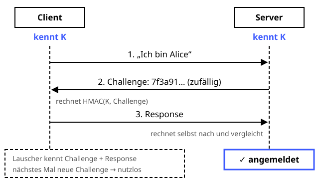

Challenge-Response
Schutzziele: Authentizität
Beweisen, dass man das Rezept kennt, ohne es zu verraten.
Definition
Beim Challenge-Response-Verfahren beweist ein Teilnehmer, dass er ein Geheimnis kennt, ohne es selbst zu übertragen: Der Prüfer schickt eine zufällige Frage (Challenge), der Teilnehmer antwortet mit einem Wert (Response), den nur ein Geheimnisträger berechnen kann. Ein Lauscher kann die Antwort nicht wiederverwenden, weil die nächste Challenge eine andere ist.
Zutaten
Zubereitung
- Der Client meldet sich: „Ich bin Alice.“
- Der Server erzeugt eine zufällige Challenge, merkt sie sich und schickt sie an den Client.
- Der Client berechnet
Response = HMAC(K, Challenge)und schickt sie zurück. - Der Server berechnet den erwarteten Wert selbst und vergleicht.
- Die Challenge wird verworfen – jede ist nur ein einziges Mal gültig.
Skizze

Der Schlüssel K geht nie über die Leitung – nur die Challenge und die passende Antwort darauf.
Skizze erstellt von Claude (KI)
Demo
Platzhalter für die Demo
Tipps
- Die Challenge muss unvorhersehbar und einmalig sein, sonst sind Replay-Angriffe möglich.
- Mit Signaturen statt HMAC muss der Server gar kein Geheimnis speichern – so funktionieren Passkeys und der Public-Key-Login bei SSH.
- Weitere Beispiele: Funk-Autoschlüssel, Bankkarten-Chip (EMV), WLAN-Anmeldung.
- Für gegenseitige Authentisierung stellen sich beide Seiten gegenseitig eine Challenge.